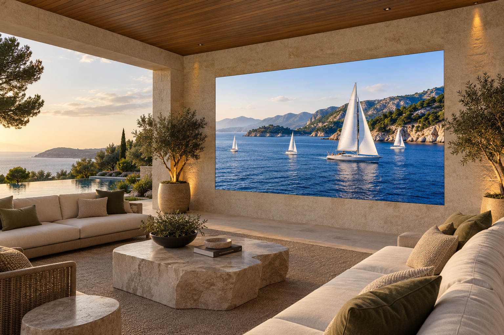
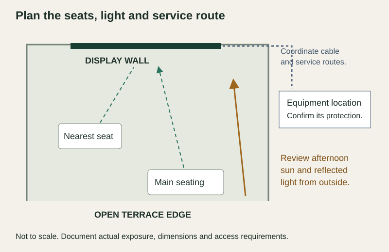

Choosing an outdoor MicroLED video wall starts with three questions: how much light reaches the screen, how close you sit and what conditions reach the installed system. Our Water Series brings 4,000-nit brightness, an IP65 rating and 1.2mm, 1.5mm and 1.875mm pixel-pitch options to residential outdoor living. Those specifications guide selection; the terrace’s sun angles, seating plan and environmental requirements determine the final design. An authorized Opal dealer should evaluate all three before specifying a wall for a covered patio or poolside lounge.
Start with the terrace’s daylight and orientation
A roof can shade a wall at noon while low afternoon sun reaches its face. Record the direction the display faces, the depth of the roof and the hours you expect to watch. Include light reflected from paving, glazing and water. Review the site during those hours, or have the design team assess seasonal sun paths where an on-site review cannot capture them.
Water’s 4,000-nit brightness gives the picture substantial output for daytime use. It does not guarantee the same contrast in every sun position. Direct light can compete with darker content, and moving the wall or adding architectural shade may improve viewing conditions. Check a sports broadcast and a dark film sequence from the intended seats under representative light.
The Water Series specifications establish the product starting point. Our guide to choosing MicroLED brightness explains how output and the surrounding light work together. The useful decision is the picture you want during your actual viewing hours.
Choose Water’s pixel pitch from the nearest seat
Brightness and image detail solve different problems. Pixel pitch is the spacing between pixels; a smaller pitch puts more pixels into the same physical image area. Water offers 1.2mm, 1.5mm and 1.875mm options. Begin with the closest regular viewing position, including a chair that may move forward during gatherings.
Evaluate 1.2mm when close seating and fine detail are priorities. Compare 1.5mm and 1.875mm at the planned distance with the same content. These are evaluation directions, not universal distance thresholds. The owner’s vision, source material, image size and preferred viewing experience all influence the choice.
The dealer should document the selected pitch, cabinet layout, finished image dimensions and native pixel dimensions together. A larger wall does not automatically require a smaller pitch, and an incoming 4K signal does not by itself establish a 4K native canvas. The pixel-pitch and viewing-distance guide develops this part of the decision.
Review exposure and viewing as separate decisions
Use this matrix during the site survey. A favorable viewing condition does not establish environmental suitability, and an ingress rating does not establish picture visibility.
| Terrace condition | Picture decision | Installation decision |
|---|---|---|
| Covered afternoon lounge | Check light reaching the screen when the roof’s shadow moves. | Record wind-driven rain and the exposure of the rear assembly and connections. |
| Close lounge seating | Compare pitch options from the nearest seat using familiar content. | Coordinate image size, mounting and service access with the finished wall. |
| Open or poolside terrace | Check reflected light and sightlines across the seating area. | Confirm the exact location against supplied-unit requirements, including any pool-chemical exposure. |
| Coastal home | Review the same daylight and nearest-seat questions. | Obtain written confirmation for salt exposure. IP65 alone does not establish corrosion suitability. |
| Evening films and hosting | Set a comfortable evening output with landscape lights on. | Document how the owner recalls the display and lighting settings. |
Understand what an IP65 outdoor display rating covers
IP65 describes ingress protection: the first digit denotes dust-tight protection, and the second denotes protection against water jets under specified test conditions. It is not an immersion rating. It also does not establish resistance to salt corrosion, pool chemicals or every method of cleaning.
Confirm the rating’s scope for the exact supplied assembly, including the installed orientation and any requirements for joints, cable entries and rear protection. Supporting equipment has its own requirements. The display’s rating does not automatically extend to a processor, power distribution, outdoor controls or every connection in the finished system.
UL Solutions’ guidance on environmental-rated enclosure accessories explains why seals, corrosion protection, UV exposure and installed accessories require attention alongside an enclosure rating. Use those distinctions to ask for the appropriate documentation for the terrace system.
For a coastal or poolside location, have the dealer obtain written confirmation of the relevant environmental limits before final selection. Include operating and storage temperatures, humidity conditions, chemical or salt exposure, cleaning instructions and required protection for supporting equipment. A covered location still needs this review.
Draw the sightlines and service route before construction
Place the image area on the architectural elevation and mark the viewing positions on the terrace plan. Check pillars, furniture and circulation routes from each seat. Coordinate the structure, cable route and equipment location before the stone or millwork is finished.

Leave the access the actual assembly requires; do not assume a flush architectural treatment permits a particular service method. Agree on how a technician reaches the wall and supporting equipment without dismantling unrelated finishes. Coordinate electrical protection and any poolside requirements with qualified professionals and the applicable local rules.
Set outdoor viewing for day and evening
The daytime setting should serve the planned light conditions. Once the terrace darkens, the wall should be adjusted for comfortable viewing with the surrounding lights in their normal positions. Water’s advertised brightness is a capability, not a requirement to operate at maximum output throughout the evening.
Specify how those settings are recalled. A manual day/evening control may be sufficient; scheduled or sensor-based adjustment should be included only when the dealer confirms the supplied control implementation. Test transitions with the owner so the intended setting is easy to find.
Our guide to outdoor rooms after dark covers the evening relationship between picture, lighting, seating and audio. For this selection, establish both day and evening requirements before choosing the wall.
What the integrator is actually deciding
An authorized integrator turns the terrace plan into a documented system specification. The design review should leave the owner and project team with these decisions:
- The team should record the main seats, nearest seat and intended viewing hours.
- The dealer should agree on image dimensions, pitch and native pixel dimensions.
- The site survey should document daylight, direct rain and any salt or pool-chemical exposure.
- The supplied-unit documentation should identify environmental limits and the scope of the IP65 rating.
- The installation plan should coordinate mounting, protected connections, equipment location and service access.
- The commissioning record should capture representative content checks and the day/evening settings the owner can recall.
Before handover, review the picture from each regular seat, recall both operating scenes and confirm the documented care instructions. The result should be a terrace display whose selection, installation and everyday controls follow the same agreed plan.
Plan a Water Series wall for your terrace
Bring an authorized Opal dealer a terrace plan, photographs facing the proposed wall, the nearest seating distance and your preferred viewing hours. Include any coastal or poolside exposure so the dealer can confirm the supplied system’s requirements.
Find a Dealer for Your Terrace